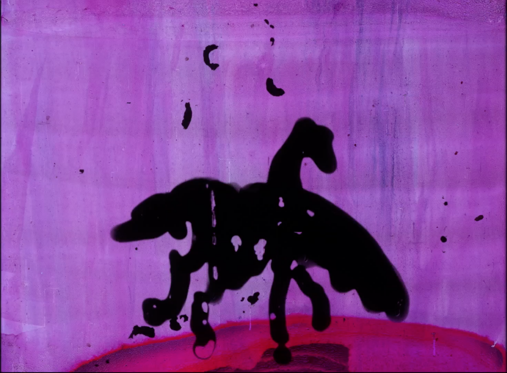

Missing Observer Studies is a time focused online cinema/journal/diary dedicated to the elongation, suspension, and untimeliness of time. Each issue is treated with care, and published indeterminately per the means and welfare of all parties involved.
huner.francis@gmail.com
ig: @huner_francis
©2020-2021
***This work is no longer available to view.
Rose Bond, Gaia’s Dream
1982, 3’01 hand drawn 16mm film,
(digital: H264/1080p)
w/
Essay & Interview
by John Summerson
October 21st, 2020 to November 15th, 2020

Rose Bond / ©2020
← Browse the Catalogue